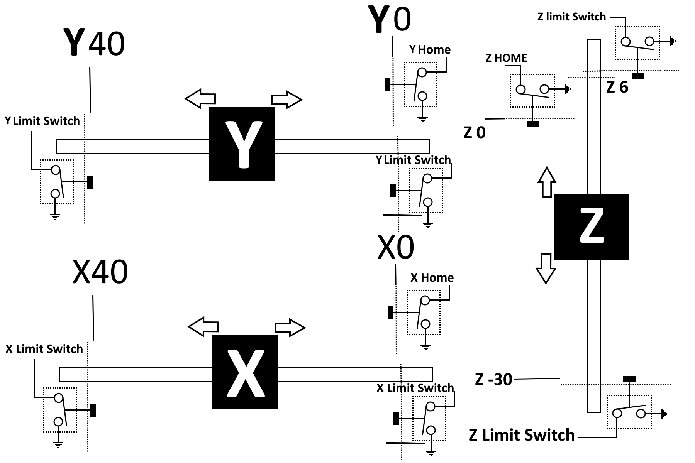
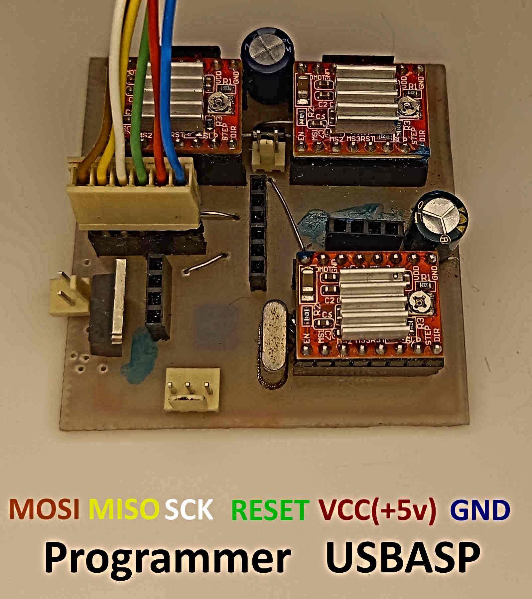

CMi209

Overview
CMI209 is a CNC-like module based on the ATmega328P microcontroller. It is controlled by the Soifgo Android app through the CMI (CNC Mobile Interface). Communication is done via a Bluetooth module at a baud rate of 115200.

The following files are included in the project: PCB file, programmer file, BASCOM file, Proteus file, and reference images. All of these files are available for download at the end of the page.
Saved Settings
The following settings are stored in memory:
pulse=100
This means that 100 pulses move the stepper motor by 1 mm in this project. If you use a different device, adjust the pulses per millimeter value in Soifgo.
Max_x=40 Max_y=40 Max_z=40
The maximum travel range for the X, Y, and Z axes is 40 mm for this setup.
feedm=1200
Default movement speed is set to 1400 mm/min. If no speed is received, the module uses the stored/default speed value.
feeds=5.7
This is the speed correction coefficient used to match the machine behavior. In this device, the measured value is 5.7.
Position Setting Commands
These commands can be received either from G-code or entered manually. Values are in millimeters, and uppercase letters must be used.
Examples:
X12 Y2 Z-3
For X and Y, decimal values, zero, and positive values are allowed. For Z, negative values are also allowed.
Length and width are defined from 0 to their maximum limits. Height has a special meaning because it depends on identifying the work surface. After setting the work surface, the Z axis must be zeroed using:
resetz
Then, to move the tool to a safe height, for example 5 mm above the surface:
Z5
To move downward by 1 mm:
Z-1
To zero the X and Y axes:
resetx resety
Spindle Speed Control
An initial spindle control circuit is included on the board. If you control the module using PWM, do not install the MOSFET input; instead, use the PWM input.
Spindle speed can be set up to 20,000 RPM. The corresponding PWM output range is 0 to 1024 (10-bit). This command can be used in both G-code and manual mode, using uppercase letters.
S0
Spindle off
S12000
Spindle speed set to 12,000 RPM
Axis Feed Speed
If no initial speed is received, the default speed described above is applied. In both G-code and manual mode, you can send values between 1 and 4800.
F600
Feed speed: 600 mm/min (uppercase letters)
Reserved PWM Output
Another reserved PWM output is available on the board, near the limit switch pins. It is intended for manual control tasks and can be used for:
- Laser power control
- Plasma cutter on/off control
- Servo motor rotation
The output range is 0 to 1024 (10-bit):
W510
Manual Arc and Circle Drawing
The module supports linear G-code and arc G-code. It also supports a manual method for drawing arcs or circles.
Command Parameters
- A: Starting angle, from 0 to 360. It must always be the first part of the command.
- B: Ending angle, from 0 to 360.
- R: Radius of the circle.
- X, Y: X and Y coordinates of the circle or arc center. These must be written after the angles.
- Z: Height/depth of the circle or arc. This must also come after the angles.
Example
A full circle with a 10 mm radius at X=20, Y=20, and a depth of 1 mm:
Before this command, raise the tool:
Z5 A0B360X20Y20Z-1
In arc drawing and arc G-code, the number of points used to generate the circle is initially set to 50. If needed, you can reduce it for a polygon-like shape, such as a hexagon, or increase it up to a maximum of 99 for higher precision.
res23
Sometimes it is necessary to wait before starting an action, for example in plasma cutting where a few seconds of delay may be needed before piercing. The following command creates a delay in seconds, from 1 to 300 seconds:
sec2
Precise Movement Commands
Sometimes the axes need to move manually in small or large increments. For example, movement in 0.5 mm steps for X, Y, and Z (0.001 to 999) using signed lowercase commands:
+x0.5 -x0.5 +y0.5 -y0.5 +z0.5 -z0.5
Homing
The home or initial position of the machine is available through:
G28
and in the module:
home
Both commands move the axes to the home position.

Limit Switches and Emergency Stop Error Input
A dedicated input is provided in the module so that when it is pulled low, the axes, spindle, and the entire machine stop.
In most machines, limit switches are installed at the end of each axis travel so that the machine is not damaged if it moves beyond its allowed range. All switches are wired in parallel, including the emergency stop push button. The circuit and wiring should be done according to the schematic.
When this fault occurs, the module will no longer accept movement commands unless the error is cleared, the machine is power-cycled, or the following command is sent through Soifgo:
resetall
If the axis remains stuck on the protective limit switch and the fault is not cleared, the module will return to the stop state again.
A dedicated stop command is also available through Soifgo:
stop
When this command is sent, the machine stops and requires:
resetall
to resume operation.
Stepper Driver Connections
This module uses three stepper motor driver modules. If you want to use another driver, do not install the onboard modules. Instead, use the four pins provided for each axis to connect an external driver:
GND ENABLE STEP DIR
Video and Usage Sections
- How to program the module(USBASP)
- How to design sample pages in Soifgo
- Sample design using Spire software and export file creation
- How to transfer the Spire export file to the phone
- How to load the file with Soifgo and operate CMI209
- Manual direct input example in Soifgo
- Understanding arc resolution settings
- Designing reset-all and stop functions in Soifgo
- Sample operation of CMI209
